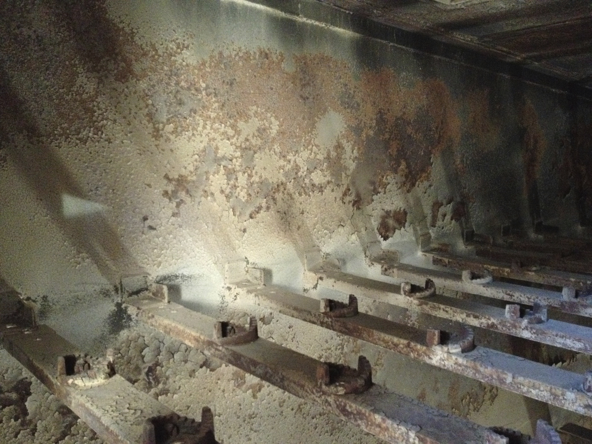
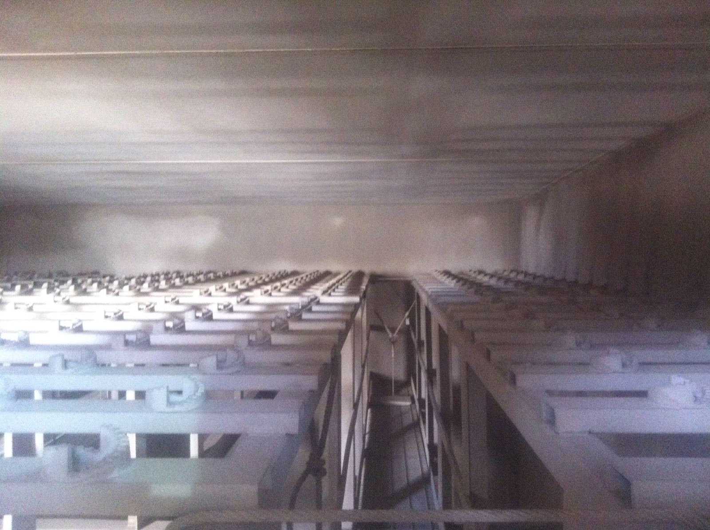

Acidic flue gas condensation was corroding the steel shell inside TXI Cement's bag house compartments, causing expensive maintenance shutdowns and premature structural failure. ITC Coatings engineered a three-product ceramic coating system that extended steel shell life by 4--5 times while simultaneously reducing bag and cartridge corrosion.

Severe acid dew point corrosion on the bag house steel shell before ITC coating application
TXI Cement's bag house consists of 12 compartments, each measuring 20' x 25' x 60' high. The internal steel shell was corroding from condensing flue gases that form an acid dew point as internal temperatures drop.
When hot flue gases from the cement kiln cool below the acid dew point inside the bag house, sulfuric and hydrochloric acids condense directly onto the steel shell. This condensation attacks the metal, causing estimated losses of 0.5 mm to 1 mm of steel per year. Additionally, fly ash agglomeration from the condensing gases created buildup that further compounded maintenance issues.
This is a widespread problem across the cement, waste-to-energy, power generation, and biomass industries -- anywhere hot flue gases pass through steel-shell equipment.
ITC recommended a comprehensive three-coat ceramic system applied to the internal steel shell:
By eliminating the acid dew point condition on the steel surface, the entire corrosion mechanism is disrupted -- no condensation means no acid attack.
With ITC's coating system protecting the steel from acid dew point corrosion, shell life is extended on average 4 to 5 times longer. For a facility that was previously replacing or repairing corroded shell sections regularly, this represents massive cost avoidance in materials, labor, and downtime.
The reduction in condensing flue gases and overall corrosion environment led to a reduction in bag and cartridge corrosion as well -- extending the life of the filtration media, not just the shell.
With the steel shell protected and bag life extended, TXI was able to significantly reduce the frequency and duration of maintenance shutdowns on the bag house.
Acid dew point corrosion is one of the most destructive -- and most preventable -- problems in industrial flue gas systems. It occurs in:
Any facility where flue gases pass through steel-shell ductwork, precipitators, scrubbers, or bag houses below the acid dew point temperature is vulnerable to this type of corrosion.
The TXI Cement project is significant because it uses all three ITC products in a coordinated system:
This approach addresses both the chemical attack (corrosion) and the thermal condition (dew point formation) simultaneously, providing comprehensive protection that a single coating cannot achieve alone.

Bag house interior after application of the ITC three-coat ceramic system
For cement plants, WTE facilities, power plants, and any operation dealing with acid dew point corrosion in flue gas systems, ITC's three-coat system offers proven protection with dramatic life extension. Contact ITC Coatings to discuss your flue gas corrosion challenges.
ITC Coatings has been engineering high-temperature ceramic coating solutions for the cement, power generation, waste-to-energy, and petrochemical industries since 1980. Based in San Angelo, Texas.
Ready to reduce your energy costs and extend refractory life?
Email: info@itccoatings.com
Phone: (325) 340-1304
Web: itccoatings.com